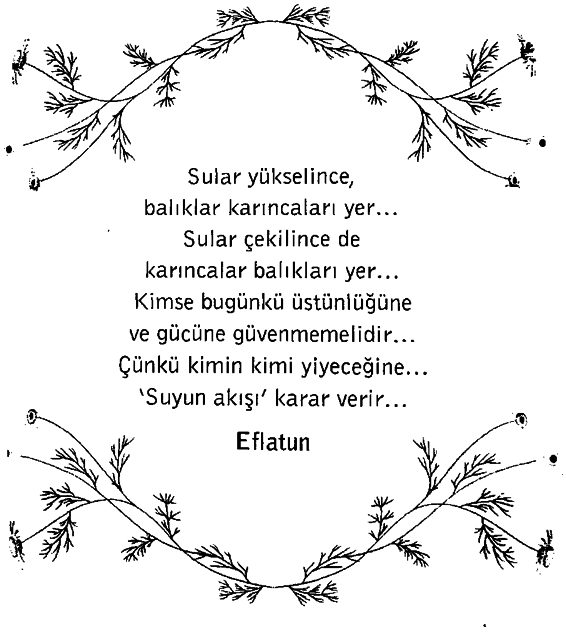

İstasyondaki danışma masasının üzerinde asılı duran kocaman yuvarlak saat altıya altı vardı. Demiryolunun olduğu taraftan henüz gelen uzun boylu genç teğmen güneş yanığı yüzünü kaldırıp, tam zamanı görmek için gözlerini kıstı. Kalbi o kadar hızlı atıyordu ki onu şaşırtıyordu. Altı dakika sonra, son 13 aydır yaşamını dolduran, hiç görmediği ama yazdıklarıyla onu hiç yalnız bırakmamış ve düş kırıklığına uğratmamış olan kadını görecekti.
Danışma masasına yanaşabildiği kadar yanaştı. Masadaki görevlileri kuşatmış insan halkasının hemen yanındaydı...
Teğmen Blandford çarpışmanın en yoğun olduğu ve uçağının çok sayıda düşman uçağı arasında sıkıştığı geceyi unutamıyordu. Düşman uçaklarından birinin pilotunun sırıtışını bile görmüştü.
Mektuplarından birinde ona korktuğunu itiraf etmişti ve bu çarpışmadan yalnızca bir iki gün önce de onun cevabı gelmişti: “Elbette korkarsın. Bütün cesur insanlar korkar. Kral Davut korkmadı mı? Bunun için kutsal kitapta bir şeyler yazmadı .mı? Kendinden şüphe ettiğin bir sonraki sefer benim sesimi duymanı istiyorum: ‘Ölümün gölgesi düşmüş vadiden geçerken hiçbir kötülükten korkmayacağım; çünkü sen benim yanımdasın.’”
Teğmen onun dediğini yaptı ve hayalinde onun sesini duydu; bu, gücünü ve yeteneğini canlandırdı.
Şimdi onun gerçek sesini duyacaktı. Altıya dört var. Yüzü ciddileşti.
Büyük, yıldızlı tavanın altında insanlar gri bir ağın üzerine renk renk iplikler dokur gibi hızla yürüyorlardı. Genç bir kız yanından geçti, teğmen Blandford hareketlendi. Elbisesinin yakasına kırmızı bir çiçek takmıştı, ama bu, kızıl bir karanfildi, anlaştıkları gibi kırmızı bir gül değildi. Üstelik bu kız çok gençti, 18’inde ya var ya yoktu, oysa Hollis Meynell 30 yaşında olduğunu ona açık açık söylemişti. “Ne olmuş, ben de 32 yaşındayım,” demişti, aslında teğmen 29’undaydı.
Aklına o kitap geldi; Florida eğitim kampına gönderilen yüzlerce ordu kütüphanesi kitabı arasından Tanrı’nın ona vermiş olması gerektiğini düşündüğü o kitap. İnsanın Esareti Üzerine adlı kitabın kenarına bir kadının el yazısıyla notlar alınmıştı. Kitabın içine yazı yazma alışkanlığından hep nefret etmişti, ama bu yorumlar çok farklıydı. Eskiden olsa, bir kadının, bir erkeğin kalbinin içini bu kadar sevgiyle, bu kadar anlayışla görebileceğine asla inanamazdı. Kitabın kapağında kadının adı yazılıydı: Hollis Meynell. Bir New York telefon rehberi bulup, kadının adresini belirlemişti. Ona mektup yazmıştı ve kadın da mektubunu yanıdamıştı. Ertesi gün, gemiyle Florida’dan ayrılmasına karşın, yazışmayı sürdürmüşlerdi.
13 ay boyunca Hollis Meynell onun mektuplarına cevap yazmış, hatta daha fazlasını yapmıştı. Blandford’dan mektup gelmediği zaman da yazmayı sürdürmüştü ve şimdi teğmen bu kadını sevdiğine, onun da kendisini sevdiğine inanıyordu.
Ama Hollis, teğmenin tüm ısrarlarına karşın ona bir resmini göndermemişti. Bu biraz kötüydü elbette. Fakat Hollis resminin eden göndermek istemediğini açıklamıştı: “Bana karşı duyguların gerçekse ve bu konuda dürüstsen, nasıl göründüğümün önemi yok. Güzel olduğumu varsay. O zaman yalnızca bu nedenle benimle İlgilendiğin duygusundan kurtulamam ve bu tür bir sevgi midemi bulandırır. Farz et ki sıradan bir tipim (kabul etmelisin ki bu daha güçlü bir olasılık), o zaman da yalnızca yalnız olduğun ve başka kimsen olmadığı için benimle yazışmayı sürdürdüğünden kaygı duyarım. Hayır, lütfen benden resmimi isteme. New York’a geldiğin zaman beni görürsün ve kararını verirsin. Unutma ki her ikimiz de birbirimizle kalmakta ya da başkalarını aramakta özgürüz; seçimimizi yapacağız...”
Altıya bir var. Teğmen sigarasından derin bir nefes çekti.
Birden teğmen Blandford’un kalbi uçağının motorundan bile daha hızlı atmaya başladı.
N
Genç bir kadın ona doğru geliyordu. Uzun boylu ve zayıftı; bukle bukle sarı saçlarını, narin kulaklarının arkasına almıştı. Gözleri menekşe mavisiydi ve dudakları ve çenesinde fazla sert olmayan bir kararlılık vardı. Açık yeşil giysisi içinde baharı andırıyordu.
Teğmen ona doğru hareket etti, yakasında gül olmadığı aklına bile gelmedi ve o, kadına yaklaşırken kadının yüzünde kışkırtıcı bir gülümseme belirdi.
Kadın, “Aynı yere mi gidiyoruz, asker?” diye mırıldandı.
Kendini tutamayıp, kadına bir adım daha yaklaştı ve onun hemen arkasında Hollis Meynell’i gördü.
Hollis, genç kadının arkasında duruyordu; 40’ını geçmiş, hafif ağarmış saçlarını eski bir şapkanın altında toplamıştı. Balıketinden biraz daha toplucaydı; alçak topukludan kalın ayak bilekleri görünüyordu. Ama kahverengi kabanının yakasına kırmızı bir gül iliştirmişti.
Yeşil elbiseli kız hızla uzaklaşıyordu.
Blandford iki parçaya bölündüğünü hissetti; kızı izlemek için büyük bir arzuyla yanıyor, ama ruhu onunkine arkadaşlık etmiş ve onu hiç bırakmamış kadına da derin bir özlem duyuyordu. Yakasında kırmızı gül olan kadının tombul yüzü yumuşak ve aklı başında bir insan olduğunun ipuçlarını veriyordu; sıcak ve nazik bakışlı gri gözlerinin yanında kırışıklıklar vardı.
Teğmen Blandford duraksamadı. Parmakları, onu kadınla özdeşleştiren İnsanın Esareti Üzerine kitabının küçük, eskimiş, mavi deri kopyasını kavradı. Bu aşk olmazdı belki ama çok değerli bir şey, aşktan da ender bulunan, şimdiye kadar olduğu gibi bundan sonra da hep minnettar kalacağı bir dostluk olurdu.
Geniş omuzlarını dikleştirdi, kadım selamladı ve ona kitabı gösterdi ama konuşurken bile uğradığı düş kırıklığının şaşkınlığı içindeydi.
“Ben Teğmen John Blandford ve siz de Bayan Meynellsiniz. Benimle buluşmayı kabul ettiğiniz için çok mutluyum. Sizi... sizi yemeğe götürmeme izin verir misiniz?”
Kadının yüzünde hoşgörülü bir gülücük belirdi. “Tüm bunlar ne anlama geliyor bilmiyorum evlâdım,” dedi. “Demin yanından geçen yeşil elbiseli hanım bu gülü yakama takmamı istedi. Bana, seninle gelmemi önerirsen, sana sokağın karşısındaki büyük restoranda seni beklediğini söylememi rica etti. Bu bir tür sınavmış. Benim de orduda iki oğlum var. Bu yüzden sana bir iyilik yapmak istedim.”
